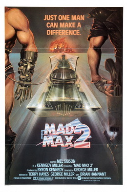
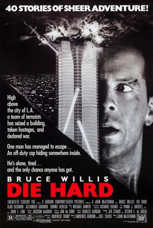

From Wikipedia, the free encyclopedia
2021
Mad Max 2

Mad Max 2 (released as The Road Warrior in the United States) is a 1981 Australian post-apocalyptic action thriller film directed by George Miller. It is the second installment in the Mad Max franchise, with Mel Gibson reprising his role as "Mad" Max Rockatansky. The film's tale of a community of settlers who moved to defend themselves against a roving band of marauders follows an archetypical "Western" frontier movie motif, as does Max's role as a hardened man who rediscovers his humanity when he decides to help the settlers...
Read
From Wikipedia, the free encyclopedia
2021
Die Hard

Die Hard is a 1988 American action film directed by John McTiernan and written by Jeb Stuart and Steven E. de Souza. It is based on the 1979 novel Nothing Lasts Forever by Roderick Thorp, and it stars Bruce Willis, Alan Rickman, Alexander Godunov, and Bonnie Bedelia. Die Hard follows New York City police detective John McClane (Willis) who is caught up in a terrorist takeover of a Los Angeles skyscraper while visiting his estranged wife. Reginald VelJohnson, William Atherton, Paul Gleason, and Hart Bochner feature in supporting roles...
Read